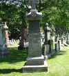
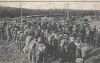
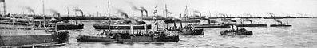
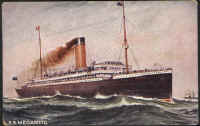
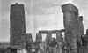

|
AOÛT Un beau mardi d'été
se lève sur Québec en ce 4 août. Charles Consigny se rend tôt à son travail de machiniste (steam
fitter)
dans St-Roch, le prospère quartier industriel et
commercial de la basse-ville.
Il sent une grande fébrilité dans
l'air, et, comme tous, est aux aguets des dernières
nouvelles. Plusieurs se rendent dans les bureaux des journaux de
la ville pour connaître les dernières dépêches en provenance
d'Europe. Tous retiennent leur souffle. Puis, l'annonce
officielle arrive enfin:
"L'Angleterre déclare la
guerre à l'Allemagne, suite à l'invasion de la Belgique. Le
Roi demande à ses Dominions de joindre leurs forces pour
soutenir l'empire britannique."
 La
nouvelle se répand comme une traînée de poudre, une fièvre
patriotique s'empare de plusieurs, une parade spontanée se
forme dans les rues avec drapeaux, bannières et chants
patriotiques. Des centaines de personnes se regroupent pour
entendre les discours de politiciens, messieurs Sévigny et
Lévesque, lesquels affirment que "les canadiens-français
sont fiers que leur mère-patrie adoptive respecte ses alliances
et vienne en aide à la France, le pays de leurs ancêtres, en
déclarant la guerre à l'Allemagne". La
nouvelle se répand comme une traînée de poudre, une fièvre
patriotique s'empare de plusieurs, une parade spontanée se
forme dans les rues avec drapeaux, bannières et chants
patriotiques. Des centaines de personnes se regroupent pour
entendre les discours de politiciens, messieurs Sévigny et
Lévesque, lesquels affirment que "les canadiens-français
sont fiers que leur mère-patrie adoptive respecte ses alliances
et vienne en aide à la France, le pays de leurs ancêtres, en
déclarant la guerre à l'Allemagne".
 Dès
le lendemain, le Canada accepte officiellement
d'envoyer un contingent impérial. Le colonel Hugues est
responsable de son organisation. Le pays n'a qu'une petite
armée régulière, il est donc décidé que le recrutement de
volontaires se tiendra du 5 au 12 août minuit. Au Québec, le
centre de mobilisation sera Valcartier où on prévoit
entraîner vingt mille hommes avant de les embarquer pour
l'Angleterre. Deux mille cibles sont achetées pour cet
entraînement. Le 10 août, les journaux rapportent que le Col.
Hugues visite le camp Valcartier pour une inspection générale
des installations faites en vue de recevoir bientôt les
hommes mobilisés. Dès
le lendemain, le Canada accepte officiellement
d'envoyer un contingent impérial. Le colonel Hugues est
responsable de son organisation. Le pays n'a qu'une petite
armée régulière, il est donc décidé que le recrutement de
volontaires se tiendra du 5 au 12 août minuit. Au Québec, le
centre de mobilisation sera Valcartier où on prévoit
entraîner vingt mille hommes avant de les embarquer pour
l'Angleterre. Deux mille cibles sont achetées pour cet
entraînement. Le 10 août, les journaux rapportent que le Col.
Hugues visite le camp Valcartier pour une inspection générale
des installations faites en vue de recevoir bientôt les
hommes mobilisés.
Charles, jeune célibataire de vingt
et un ans, vibre
à l'enthousiasme général (photo
ci-contre, 1919). Tenté par l'aventure, il se
présente à un bureau de recrutement. Et oui, cette guerre commence dans
l'allégresse! La fleur au fusil. Des hommes, de toutes
origines, quittent emploi et famille pour s'engager. Ils le font
par sens du devoir, pour la patrie, par
héroïsme, pour porter un uniforme et être admirés, voir du pays, vivre une nouvelle
expérience, ...
Les journaux, les politiciens, tout le monde clame que "tout serait
réglé avant Noël", alors, pourquoi ne pas
relever ce
défi ?
 La candidature de Charles est acceptée, il a peu
de temps pour se préparer. Il quitte son emploi, salue ses
nombreux oncles, tantes, cousins et cousines qui habitent tous
dans le quartier. Il va se recueillir sur les tombes de ses parents et
grands-parents au
cimetière Saint-Charles. (Photo
ci-contre: monument de la famille Thibaudeau, les grands-parents
maternels et la mère de
Charles y sont inhumés, peut-être aussi son père)
Orphelin, Charles confie son peu de biens à
sa soeur aînée Crescence, qu'il désigne comme proche parent
sur les documents officiels de l'armée. Sa seule autre famille
est son jeune frère Antoine, dix-huit ans, qui habite sans doute chez
leur grande soeur. Probablement que Charles pensionne aussi chez sa soeur. À cette époque on
reste en famille jusqu'à ce qu'on se marie, même si les logements sont
exigus.
Crescence, vingt-cinq ans, est mariée depuis quatre
ans à Rolland Pleau, cordonnier. Ils habitent le 28 St-Léon,
quartier St-Sauveur, ils ont un fils et attendent un autre enfant pour
novembre.
 Rolland a une belle cousine, Ézilda Côté
(photo
ci-contre, 1919). Originaire de Québec, elle habite Montréal depuis une
dizaine d'années. Charles et Ézilda sont-ils déjà fiancés,
ou, est-ce durant la correspondance qu'il va lui envoyer
d'Europe que leurs liens vont s'affirmer? Nous n'en savons rien
pour l'instant, les seules cartes postales que nous ayons datent
de 1919. Charles va-t-il à Montréal saluer Ézilda? Il n'en a
probablement pas le temps, tout se précipite. Rolland a une belle cousine, Ézilda Côté
(photo
ci-contre, 1919). Originaire de Québec, elle habite Montréal depuis une
dizaine d'années. Charles et Ézilda sont-ils déjà fiancés,
ou, est-ce durant la correspondance qu'il va lui envoyer
d'Europe que leurs liens vont s'affirmer? Nous n'en savons rien
pour l'instant, les seules cartes postales que nous ayons datent
de 1919. Charles va-t-il à Montréal saluer Ézilda? Il n'en a
probablement pas le temps, tout se précipite.
 Le
13 août, un jeudi, Charles se rend à la Gare du Palais et embarque
dans le train menant les recrues de Québec vers le camp Valcartier. Le recrutement est terminé depuis la veille, le
nombre de volontaires est si grand que le gouvernement
canadien envisage la formation d'un deuxième contingent dans
les prochains mois. Plusieurs américains se sont portés
volontaires, la plupart d'origine canadienne.
 Les semaines
suivantes sont fort occupées. Charles passe des examens
médicaux, il est vacciné contre la thyphoide et la petite
vérole. On lui remet un uniforme et il se familiarise avec la vie et l'équipement
militaires. Un entraînement minimal débute dans la
plaine de Valcartier, aux pieds des Laurentides. Il se
poursuivra en Angleterre, la priorité étant d'y envoyer le
premier contingent le plus vite possible avant l'hiver. Le gouvernement doit
aussi trouver les cinq à six mille chevaux nécessaires au contingent. Les semaines
suivantes sont fort occupées. Charles passe des examens
médicaux, il est vacciné contre la thyphoide et la petite
vérole. On lui remet un uniforme et il se familiarise avec la vie et l'équipement
militaires. Un entraînement minimal débute dans la
plaine de Valcartier, aux pieds des Laurentides. Il se
poursuivra en Angleterre, la priorité étant d'y envoyer le
premier contingent le plus vite possible avant l'hiver. Le gouvernement doit
aussi trouver les cinq à six mille chevaux nécessaires au contingent.
SEPTEMBRE
Le 26 septembre, Charles signe officiellement son
engagement dans le Canadian Over-Seas Expeditionary Force. Il
reçoit le numéro matricule C43804. Il s'engage alors à "servir
dans n'importe quelle arme et pour une durée d'un an ou le
temps nécessaire pour cette guerre entre l'Angleterre et
l'Allemagne, plus six mois après la fin de la guerre".
Charles prête serment d'allégeance au Roi George V et à ses
successeurs, il s'engage à le défendre et à obéir à tout
Général et officiers qui lui commanderont. "So help me
God".
Son
salaire est d'un dollar par jour, plus une prime de dix sous pour
"field allowance" . Ce salaire ne variera pas de toute la durée de
la guerre. Il est affecté au Unit Divisional
Ammunition Column. En fait, le D.A.C. est une unité de
ravitaillement.
|

Après quelques semaines d'entraînement, le premier
contingent du corps expéditionnaire canadien s'embarque
pour l'Angleterre, formant le plus important convoi qui
ait jamais traversé l'Atlantique. Soit plus de
trente mille hommes
répartis dans des unités d'infanterie, d'artillerie, d'ingénieurs, de
santé
et de médecine vétérinaire, de transmissions, ainsi
que le corps d'intendance.
|
DE LA PLAINE DE
VALCARTIER
À CELLE DE SALISBURY
OCTOBRE
Le 4 octobre,
un dimanche, les proches de Charles viennent le saluer une
dernière fois au port de Québec. Charles s'embarque sur le S.S.
Megantic, un paquebot de la White Star Line construit à
Belfast en 1908 (photo ci-contre).  C'est
l'un des navires réquisitionnés par le gouvernement pour le transport de troupes vers l'Angleterre.
Les bateaux du Corps expéditionnaire canadien arrivent en
Grande-Bretagne à partir du 14 octobre. Les journaux de Québec
rapportent que le convoi canadien est accueilli dans
l'allégresse par la population locale qui vient saluer,
remercier et
encourager nos soldats.
 Le 16
octobre, un vendredi après-midi,
Charles débarque à Devonport, près de Plymouth, avec
plus de quatre cents soldats et vingt-quatre officiers de l'unité
D.A.C. En colonnes, tous marchent deux milles et
demi vers la gare de Millbay. En fin de soirée,
ils roulent vers Patney, où ils arrivent au milieu de la nuit.
Cinquante hommes malades restent à Patney sous la
surveillance d'un médecin. Les symptômes sont ceux
d'un empoisonnement alimentaire. Le 16
octobre, un vendredi après-midi,
Charles débarque à Devonport, près de Plymouth, avec
plus de quatre cents soldats et vingt-quatre officiers de l'unité
D.A.C. En colonnes, tous marchent deux milles et
demi vers la gare de Millbay. En fin de soirée,
ils roulent vers Patney, où ils arrivent au milieu de la nuit.
Cinquante hommes malades restent à Patney sous la
surveillance d'un médecin. Les symptômes sont ceux
d'un empoisonnement alimentaire.
Le reste de la troupe marche avec leur équipement vers le West
Down North Camp dans la plaine de
Salisbury, ils y arrivent tôt le matin.
Un repas chaud leur est servi, le major en
remercie l'officier du camp. De plus, près de cent tentes, dont certaines
avec un plancher, ont été montées pour eux. À midi, deux
feux sont installés sous des abris, et les rations
distribuées pour le dîner. Tout l'après-midi sert à planter
des piquets pour attacher les chevaux. Le soir, les cinquante
hommes malades rejoignent la troupe, leur état ne semble pas
meilleur.
|
Ce soir-là la température est belle et
froide. Charles passe sa première nuit dans la plaine de
Salisbury,
comté de Wiltshire, Angleterre.
Charles est à quelques milles de Stonehenge,
un monument mégalithique érigé depuis des
millénaires.
La plaine de Salisbury est un
large territoire de deux cents milles carrés qui, depuis longtemps,
est presque exclusivement réservé aux manoeuvres militaires.
Quant à la
ville de Salisbury, située au nord-ouest de Southampton, elle remonte à
l'âge de fer, les Romains l'appelaient " Sorviodunum ".
Elle serait, selon les légendes arthuriennes, le lieu appelé
"Camlann " où le Roi Arthur aurait reçu
le coup mortel.
|

Des soldats britanniques de
différentes origines visitant Stonehenge
|

La plaine de Salisbury, le camp de
Charles est le West Down North Camp
|

Dans les camps les soldats ont un
magasin général, un YMCA, et différents autres
services...
|
|
|